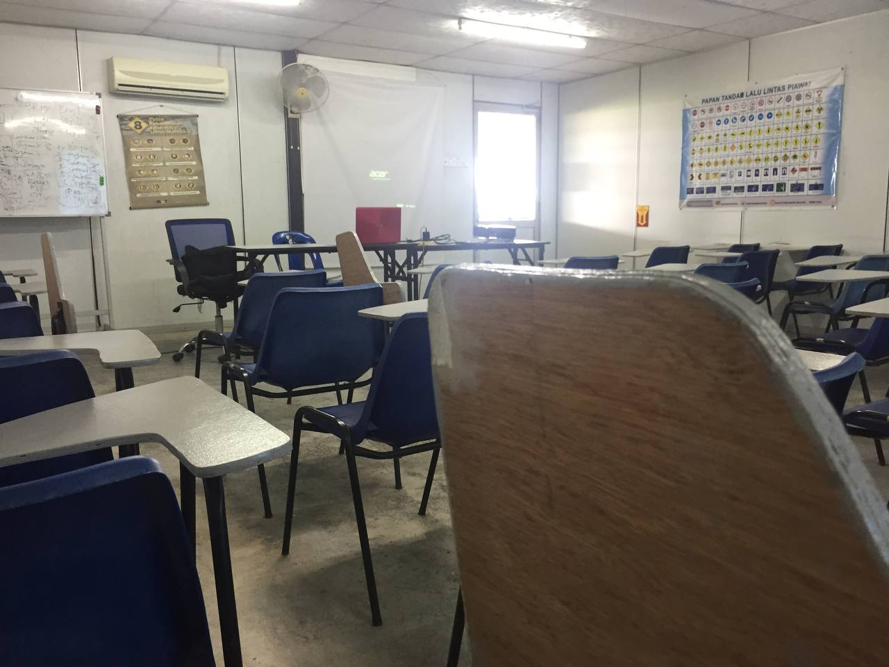

SPM Journey
first picture was taken during the last sport day before lockdown happened.
lucky we could make it last time before leaving the school. The second pictures
is when we have good time with sir daniel. he is the practical teacher from Australia.
since school is only welcome for senior form 4 and 5 so we have a lot of fun. but it feels sad or lonely
sometimes because I don't hear other students laugh anymore.
well well guess what people in cooking class do? we cook and study at the same time making this the best experience.
this picture is taken around January of 2022. 2 months before our batch leaves the school.
.jpg)
alia is my partner for cooking class. we stick to each other for 2 years. and the right picture is ours
individual project for this subject.
our last extra class for spm 2021. this is history class.
celebrate for spm feat aweks rempitzz
my last paper on 29 March 2022 and indirectly we were among the students who took the paper on the last day for spm 2021.
Alhamduillah we did it! I wish all the best for each of you for the new journey.
NAH! just kidding we still contact each other for sure.
OPPSS! results day! congrats aweks rempitzz. thank you for begining nice to me
even though im the problematic.

HEH??
celebrate eid together and we watch evil dead rise at cinema for the next day.
last date with my best friend before i'm going to uni.
register day. welcome uitm and murni 1 my second home until now. Alhamdulillah.
To my lovely classmates, thank you for being kind to me and making my
diploma journey full of amazing youth experiences.
saya di uitm.